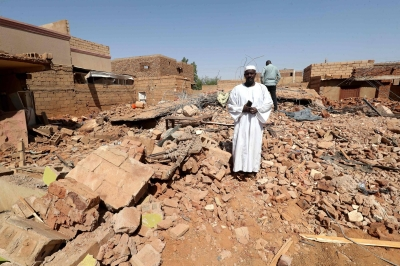

Turkish Central Bank to defend lira, sustain disinflation amid global market turmoil: Governor
Türkiye’s central bank stands ready to use its policy rate and macroprudential tools to support lira if needed, says Governor Fatih Karahan
يُرِيدُونَ لِيُطْفِـُٔوا۟ نُورَ ٱللَّهِ بِأَفْوَٰهِهِمْ وَٱللَّهُ مُتِمُّ نُورِهِۦ وَلَوْ كَرِهَ ٱلْكَٰفِرُونَ
They want to extinguish the light of Allah with their mouths, but Allah will perfect His light, although the disbelievers dislike it.
Qur'an · As-Saff 61:834,555 stories from 5,951 outlets across 9 regions and 18 desks, over the last 30 days.
Türkiye’s central bank stands ready to use its policy rate and macroprudential tools to support lira if needed, says Governor Fatih Karahan

Middle East latest: Eisenkot says no immediate Iran threat requiring Israeli military action The National

Saudi Arabia's influence loomed large over failed COP31 deal Reuters

Climate talks collapsed on Sunday at COP31 in Turkey, ending the longest ever United Nations climate summit with no deal to show for it.

Ukraine sinks Russian warship in Libya as conflict spreads beyond Europe Reuters
Narrated al-Qasim:Aisha said that whenever the Prophet (ﷺ) intended to go on a journey, he drew lots among his wives (so as to take one of them along with him). During one of his journeys the lot fell on `Aisha and Hafsa. When night fell the Prophet (ﷺ) would ride beside `Aisha and talk with her. One night Hafsa said to `Aisha, "Won't you ride my camel tonight and I ride yours, so that you may see (me) and I see (you) (in new situation)?" `Aisha said, "Yes, (I agree.)" So `Aisha rode, and then the Prophet (ﷺ) came towards `Aisha's camel on which Hafsa was riding. He greeted Hafsa and then proceeded (beside her) till they dismounted (on the way). `Aisha missed him, and so, when they dismounted, she put her legs in the Idhkhir and said, "O Lord (Allah)! Send a scorpion or a snake to bite me for I am not to blame him (the Prophet (ﷺ)
Sahih al-Bukhari 5211Fazilet Takvimi publishes no feed or API, so this comes from an open dataset of the classical collections. Check the reference against sunnah.com.
Gulf oil exports would remain vulnerable to disruption even if producers built an estimated $40 billion in pipelines to bypass the Strait of Hormuz, the International Energy Agency said as the Iran war drags on. About 7 million barrels a day of new pipeline capacity is under cons
COP31 climate talks collapse as EU and others reject deal RTE.ie
Middle East MUFG Research
UN climate talks start in the year of disasters, energy price shocks and fast rising temperatures Canada's National Observer

An international court ruling of genocide against Myanmar might complicate Beijing’s diplomatic engagement with Naypyidaw and cast a shadow over Belt and Road Initiative infrastructure projects in the country, observers warn. The landmark decision by the UN’s highest judicial bod

The US and Iran could still reach a deal, the Egyptian Foreign Minister said on Sunday, as Cairo and regional partners worked to bring both sides back to the negotiating table. “I believe that there is a possibility for dialogue, for reaching a deal, for reaching a compromise,” s

Canada-U.S. Trade Minister Dominic LeBlanc says if Canada can reach an interim agreement with the Trump administration, then that would likely kickstart formal talks around reviewing the trilateral trade pact with the U.S. and Mexico.
Reactions to ICJ ruling underline global divisions over court with China raising concerns about judicial overreach The US has greeted with caution the world’s highest court’s ruling that Myanmar committed genocide against its Rohingya minority, while China has raised concerns of
Saudi Arabia's influence loomed large over failed COP31 deal Reuters

Désiré Doué sustained an ACL injury in PSG’s 3-2 win at Nice and joins Khvicha Kvaratskhelia on the treatment table By Get French Football News Luis Enrique is in uncharted territory, even if he insists that “it isn’t a first”. Since arriving at Paris Saint-Germain in 2023, only

Scotland intend to bring fancied Sweden's World Cup dream "crashing down - and do it in a truly Scottish way", says manager Melissa Andreatta.

Steven Pressley says he felt embarrassed by Dundee's 8-0 "humiliation" by Hearts and that there is a "fragility" in his squad.
Nvidia reinstates Jensen Huang as CEO amid pressure from President Trump, investors Reuters
Chairman Yukio Kani said power demand globally is growing, while the rapid development of AI is creating a new source of consumption.

Tech giants continue to tap debt markets and raise equity to bolster their AI infrastructure
Risk of Iran war escalation remains high despite Democratic sweep in U.S. midterm elections CNBC

A reported secret Pentagon directive restricting military co-operation with Canada has caught Ottawa off guard. Canadian defence officials say they've seen no evidence of restrictions taking effect. The Pentagon insists NORAD, NATO and intelligence cooperation remain untouched, b

Ongoing fund liquidation issue in Türkiye may not pressure sovereign credit rating as much as expected

Finance Minister is leading a group of investors on a tour of Persian Gulf states as part of Ottawa’s effort to strengthen relationship

Romanian authorities are investigating several hundred cases of individuals who obtained Romanian citizenship by fraudulent means. By examining court records, Le Monde and five media partners have identified some 50 Russians as well as Ukrainians, some of whom may have engaged in
Türkiye’s central bank stands ready to use its policy rate and macroprudential tools to support lira if needed, says Governor Fatih Karahan

The country has a problem with "bad inflation" driven by raw material costs, which could lead to deflationary forces when they subside.
Communist Party mouthpiece People’s Daily has pushed back against Western descriptions of China’s economy, including claims of a “deflation trap” and “China Shock 2.0”, accusing critics of seeking to undermine confidence in the country and justify trade restrictions. The remarks
US returns over $12 billion in oil proceeds to Venezuela since Maduro's ouster, report says BusinessLine
Middle East latest: Eisenkot says no immediate Iran threat requiring Israeli military action The National
Washington has not managed to extract significant concessions from the Cuban government while Havana is playing the long game, maybe hoping that State Secretary Marco Rubio will leave his post to run for president
Ukraine sinks Russian warship in Libya as conflict spreads beyond Europe Reuters

Israel's Eisenkot condemns arson attacks by Jewish settlers in West Bank Reuters

Rescuers evacuated nine people, including a child, from the destroyed five-storey building in Dymer, while 11 were believed to be trapped under the rubble

War blamed for Republicans’ historic midterm losses as vice-president calls for the US to exit the conflict

Explosions rang out in the area around Khartoum airport and other parts of the city from around 2:00 a.m. until approximately 4:30 a.m.
Bahrain said two people were wounded in an attack on “a civilian industrial site”, while Iran’s Revolutionary Guards said they targeted U.S. air defence systems.

Private sector accounts for $5.4B of the $7.8B quarterly increase, with its external debt reaching $322.2B, central bank data shows
Authorities say they believe the Saturday night shooting at a concert in Strathmore ‘may be gang-related’ Nine people were shot at a concert in central California , leaving one person critically injured with a chest injury, the local sheriff said Sunday. The shooting broke out at
Fugitive Criminals Need a New Hideout Since the U.A.E. Started Extraditing Them WSJ
Myanmar genocide judgment may bolster Gaza case against Israel - Middle East and Africa The Jakarta Post

Ottawa's new budget promises to help Canadian AI companies access AI processing power on home soil — something that's been a challenge as smaller startups face fierce competition from larger AI companies that are "desperate for compute."
Nvidia said on Monday it was reinstating Jensen Huang as CEO, effective immediately, an extraordinary reversal that followed calls from US President Donald Trump for his return after Huang resigned over revelations of extramarital affairs, including one with a woman alleged to h

The president is hosting a summit on Monday to put the spotlight on €42.5 billion in investments in France from French companies. Behind the impressive figures lies a worrying trend.

U.S. President Donald Trump welcomed the move as a “correct and proper decision”
U.S. Tracked Alice Huang’s Contacts With China Spy Agency During Nvidia Affair The New York Times
Microsoft President Brad Smith says global efforts to fix software vulnerabilities and upgrade ageing infrastructure could take months.

Bell says it's investigating a cyber incident in which some enterprise client data may have been stolen. A spokesperson confirmed an "agentic" threat actor was able to access some of the company's systems, including one used for ordering and supplying telecommunication networks.

It’s the first bank in Canada to use quantum computing for practical applications, BMO says
Final submissions in the trial of author and former UBC professor Stephen Galloway's defamation lawsuit are set to begin in B.C. Supreme Court in Vancouver Monday.

Bangladesh vows to arrest Hasina if she returns from India Reuters

An Indian man was sentenced to more than 19 years in prison in a federal court in New York on Friday after admitting guilt in a plot to kill dual U.S.-Canadian citizen Gurpatwant Pannun.

Katz's position has been that the IDF should only deal with defending its citizens from foreign countries or terror, such as from Gaza, Lebanon, the West Bank, Palestinians, and others.
Netanyahu, Eisenkot parties end talks without deal on forming Israel govt Arab News
Turkish Foreign Minister Hakan Fidan had three phone calls on Monday in a new round of diplomacy, during which he discussed regional developments. Foreign Ministry sources said tha...

The White House has framed the trilateral meeting as necessary for "the safety of the world," despite claims that it alienated allies like Japan.
As Trump basks in summit pomp, China’s Xi strengthens his hand The Japan Times
Climate talks collapsed on Sunday at COP31 in Turkey, ending the longest ever United Nations climate summit with no deal to show for it.
In their own words: Leaders at UN climate talks discuss why negotiations ended without deal AP News
Green Party Leader Emily Lowan and her caucus colleague Jeremy Valeriote will be sworn into office today at the legislature and Lowan has already set the tone for her tenure.

Canada has a three-ocean coastline — 243,000 kilometres — and only 20 underwater drones to help defend it. The navy's commander confirms there isn't a solution ready a year after an internal document shows top officials talked about the need for a short-term fix.

South Korea's education minister resigned Sunday over an AI-assisted cheating scandal that erupted ahead of the country's key college entrance exams last week.
The Haitian government is working to establish a de-escalation office. Alix Didier Fils-Aimé’s popularity is plummeting, while Nayib Bukele is being hailed by a public tired of living in a country in turmoil

Asian universities hold 47 of the top 100 places in a global ranking of interdisciplinary science, outnumbering those from North America and Europe combined.
The National University of Singapore has climbed six places to second in the Interdisciplinary Science Rankings 2027, pushing Stanford University down to third behind the Massachusetts Institute of Technology.
Before a shirt reaches a shop in China, artificial intelligence may have already played a part in making it, from helping manufacturers understand consumer preferences to turning those insights into design ideas. At a factory run by Jiangsu-based HLA Group, AI-integrated systems
Türkiye's exclusion from "Made in Europe" rules would harm rather than protect the European automotive industry, Trade Minister Ömer Bolat said Thursday, as Turkish companies bat...

Ford Motor Co. is betting its Oakville, Ont., assembly complex can help the company drive growth and demonstrate the automaker's commitment to Canadian manufacturing for the long haul.

The projected amount of money Stellantis would owe Ottawa should the sale of its Brampton, Ont., auto plant proceed is $831 million, a senior federal source tells CBC News.
Israeli police have detained a 47-year-old Turkish tourist on allegations of supporting Hamas and promoting terrorism after she visited the Al-Aqsa Mosque compound in occupied East...

Synagogue was destroyed months before Kristallnacht; more than 100 stones recently retrieved from Isar River have been returned to Jewish community; they will be exhibited from April
This project, which has been gaining momentum across the continent, has expanded under the presidency of Abelardo de la Espriella. For years now, the culture war promoted by the far right has been brewing in evangelical churches

Exodigo and Space 42 will create ‘digital twins’ of major cities, allowing for construction planning without significant disruption to daily life
Türkiye's central bank could use its policy rate along with other macroprudential and liquidity tools to support demand for the Turkish lira if needed, its governor said Monday, ad...
Global inflation calls for monetary policy tightening in many economies, IMF head says Tri-City Herald
Central Bank Currency Swaps Tracker Council on Foreign Relations
China, EU officials discuss exchange rates as central bank chief Pan urges cooperation Reuters